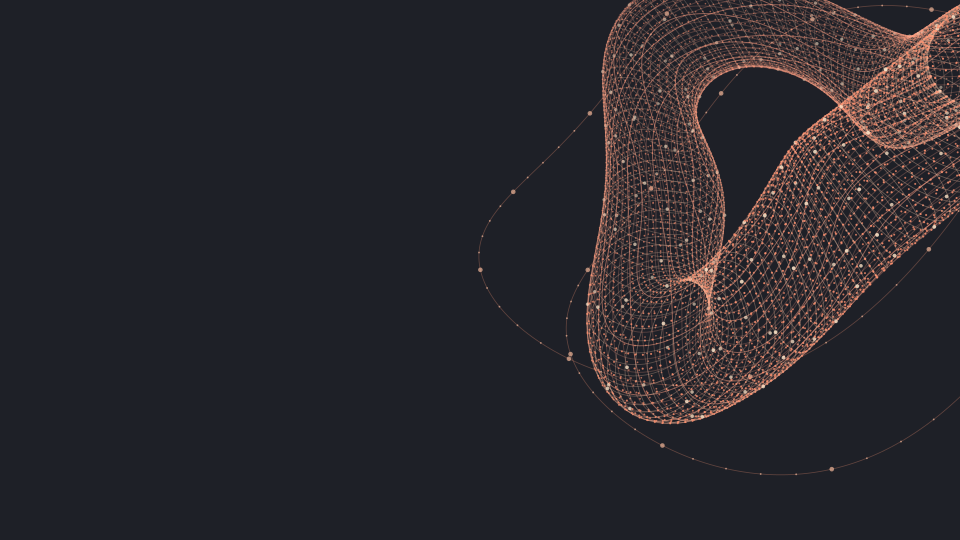
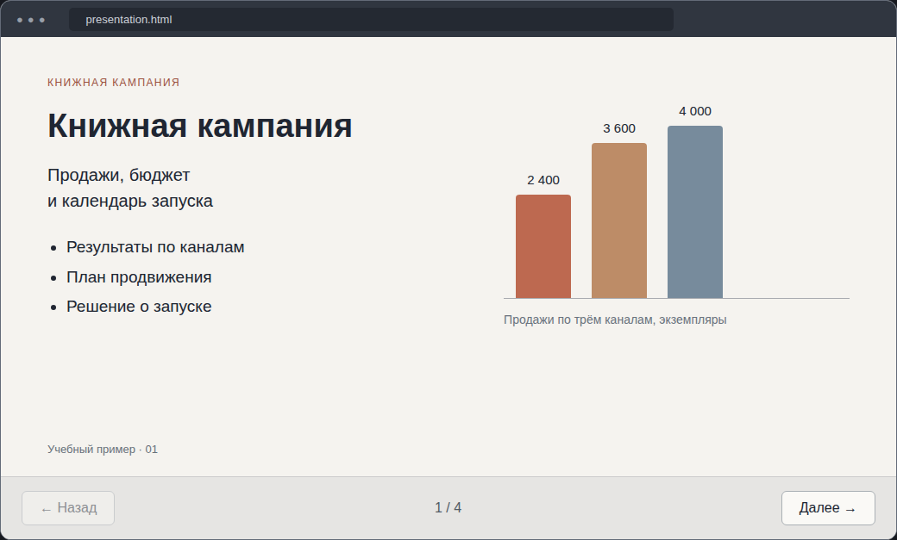
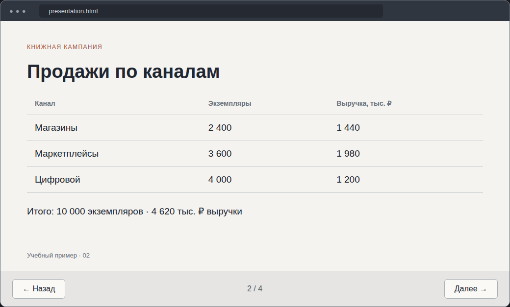
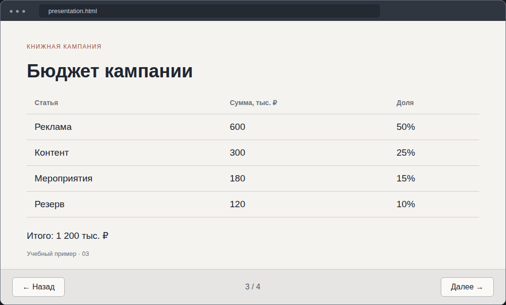
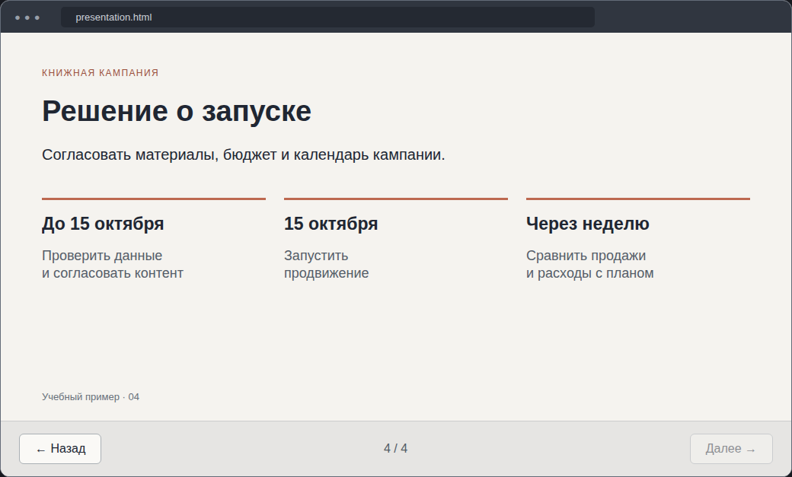
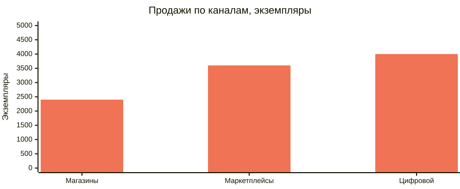
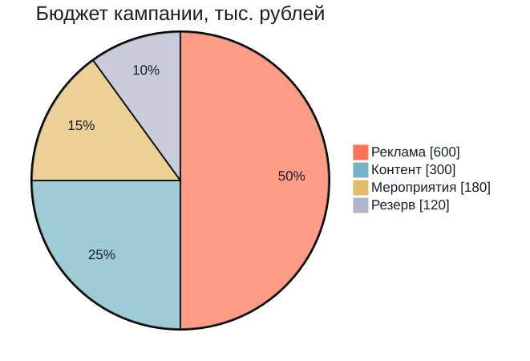
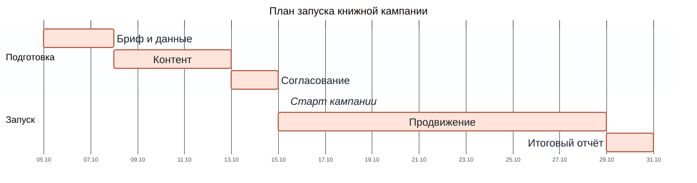

От задачи и фактов
к слайдам и диаграммам
Ярослав Шуваев
Показать предложение в браузере.
Передать коллегам файл для правок.
Хранить структуру в одном исходнике.
Показать числа, связи и сроки.
Передать структуру и проверить результат.
Сравнить оформление и сохранность данных.
Подготовить презентацию для согласования книжной кампании.
Продажи по каналам, статьи расходов, сроки и ответственные.
Бюджет в учебном примере — 1,2 млн ₽.
Слайды с выводами, таблицей, бюджетом и календарём.

1. Титульный слайд

2. Продажи по каналам

3. Бюджет

4. Календарь запуска
Быстро обсудить предложение без ручной сборки каждого слайда.
Решение, продажи по каналам, бюджет и дата запуска.
Один HTML-файл, четыре слайда, навигация и печать.
Полный промпт и рабочий пример — в тренажёре.
Так может выглядеть результат промпта: слайды внутри окна браузера.
Коллегам нужно менять текст и расположение элементов.
Те же факты и план из четырёх слайдов.
Google Презентация с нативными текстовыми блоками.
Скрипт создаёт файл, добавляет слайды, размещает текст и задаёт оформление.
Каждый запуск создаёт новый файл. Рабочие презентации коллег не меняются.
Это JavaScript для сервисов Google.
const deck = SlidesApp.create('Книжная кампания'); const slide = deck.appendSlide(SlidesApp.PredefinedLayout.BLANK); const title = slide.insertTextBox('Решение о запуске', 42, 30, 620, 70); title.getText().getTextStyle() .setFontFamily('Arial') .setFontSize(28) .setBold(true) .setForegroundColor('#ff9f83');
Текст и координаты остаются редактируемыми. Полный скрипт создаёт четыре слайда.
Откройте URL из журнала выполнения.
Четыре слайда. Сумма продаж — 10 000. Бюджет — 1 200 тыс. ₽.
Измените один заголовок вручную: так проверяется редактируемость текста.
Marp — набор инструментов для создания слайдов из Markdown.
Текст, таблицы и ссылки на изображения хранятся в файле .md. Настройки задают тему, размер и нумерацию слайдов.
Содержание можно подготовить с ИИ, а затем собрать и проверить в Marp.
Mermaid описывает диаграммы. Для переноса их можно заранее сохранить как SVG.
Править факты и порядок слайдов, сохраняя общий исходник для разных инструментов.
Markdown с настройками Marp, разделителями и таблицами.
Результат — текстовый файл .md. Следующий шаг — предпросмотр и экспорт в Marp.
--- marp: true size: 16:9 paginate: true --- # Решение о запуске Согласовать **план кампании**. --- # Продажи по каналам
Первый блок — настройки.
Строка # — заголовок.
Следующая --- — новый слайд.
Сначала согласуйте содержание, затем меняйте оформление.
Заголовок, таблица и подпись размещены на отдельном слайде.
Исходные числа сохранены: 10 000 экземпляров и 4 620 тыс. ₽ выручки.
В тренажёре можно открыть всю презентацию и скачать её исходник.
| ВОПРОС | ФОРМА | КОНТРОЛЬ |
|---|---|---|
| Где продаём больше? | Столбцы | Единицы и высота столбцов |
| Как меняется показатель? | Линия | Порядок недель и значения |
| Из чего состоит бюджет? | Круг | Сумма долей 100% |
| Кто что согласует? | Процесс / взаимодействие | Направление связей |
| Что и когда запускаем? | Гант | Даты, длительности, зависимости |

2 400 + 3 600 + 4 000 = 10 000 экземпляров. Доля цифрового канала — 40% количества, не выручки.

600 + 300 + 180 + 120 = 1 200 тыс. ₽. Доли: 50% / 25% / 15% / 10%.

Проверяйте направление стрелок и обе ветки решения. Запуск — только после согласования.

Запуск — 15 октября. Продвижение — 14 календарных дней, до 29 октября не включая. Сдвиг согласования требует пересмотра плана.
14 слайдов: таблицы, столбцы, линия, круг, процесс, взаимодействие и Гант.
Исходный Marp с Mermaid — для проверки поддержки.
Marp с SVG, PDF и PPTX — для альтернативного переноса.
Получить файл презентации из согласованного содержания.
Текстовый план ещё не является готовой презентацией.
Схема процесса может отобразиться, а график или Гант — остаться кодом.
Работающий Mermaid в одном инструменте не подтверждает поддержку в другом.
Собрать оформленную презентацию, сохранив факты и порядок аргументов.
Если .md не принимается, используйте вставку текста или PPTX.
Сохраняет внешний вид.
Меняются размер и положение. Значения внутри изображения не редактируются как данные.
Позволяет менять значения и подписи.
Потребуется проверить или заново внести исходную таблицу.
Не обещайте редактируемость по одному внешнему виду.
| КРИТЕРИЙ | ЧТО ПРОВЕРИТЬ |
|---|---|
| Содержание | 14 слайдов, исходные заголовки и выводы |
| Числа | 10 000 экземпляров; бюджет 1 200 тыс. ₽ |
| Диаграммы | Значения, легенды, стрелки и даты |
| Редактирование | Текст / график / статичное изображение |
| Экспорт | Читаемый PDF без обрезанных элементов |
В тренажёре — таблица сравнения с сохранением результатов в браузере.
Примеры, полный набор промптов, редактор диаграмм и таблица сравнения.